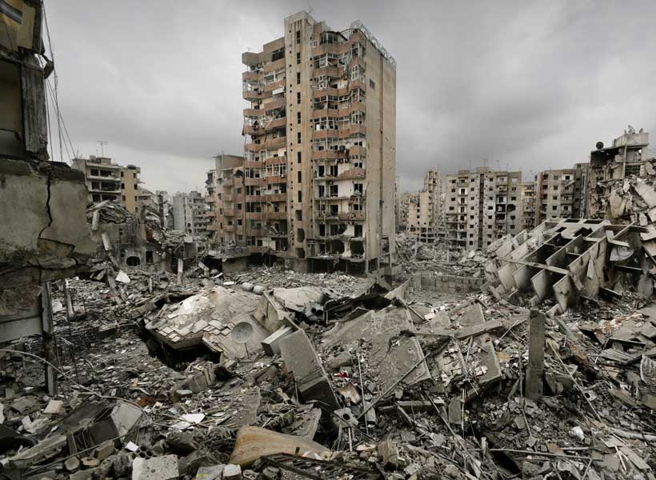

Siya's Response
Solmaz Sharif's poem "Personal Effects" is a moving and thought-provoking look at the devastation of war and its impact on individual lives. The poem begins with a list of seemingly insignificant objects that are revealed to be the possessions of people who have been imprisoned or killed in war. The reader is forced to confront the brutal reality of war and its toll on those caught in its crosshairs as the poem progresses. Sharif describes the horrors of war with stark imagery and powerful language, painting a vivid picture of the destruction and devastation it causes. The poem also raises serious concerns about the role of language in shaping our understanding of war and its consequences. Sharif emphasizes the use of euphemistic and dehumanizing language in military and political contexts, such as "collateral damage" and "neutralization," to highlight how language can be used to obscure the true cost of war. Overall, "Personal Effects" is a powerful and moving work that forces the reader to confront the human cost of war as well as the importance of remembering and honoring those who have died. 